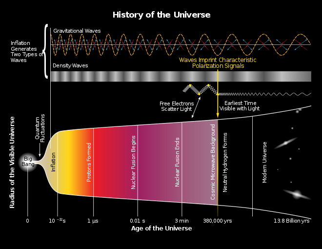
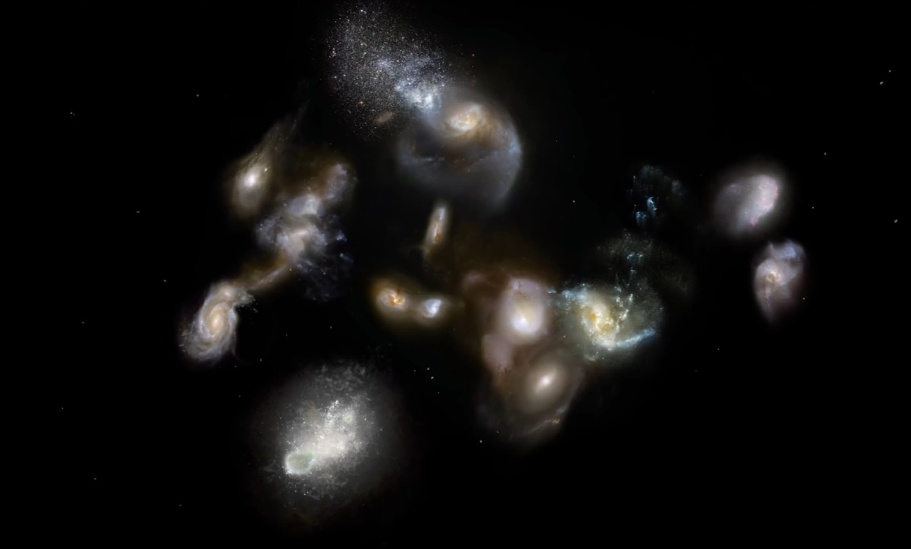
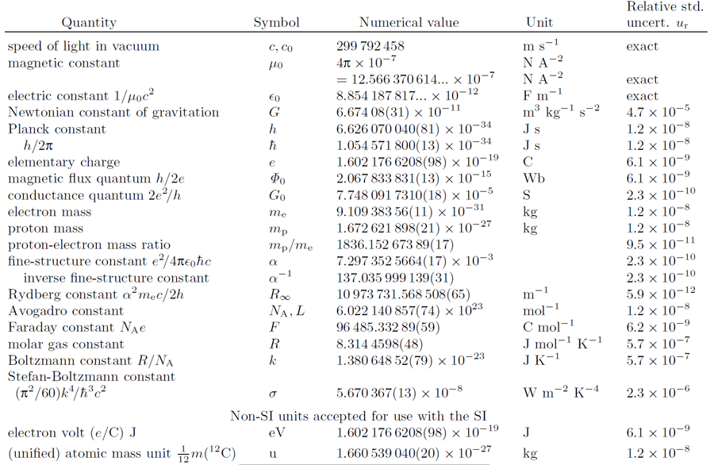
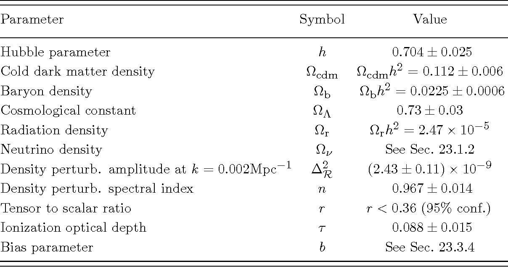
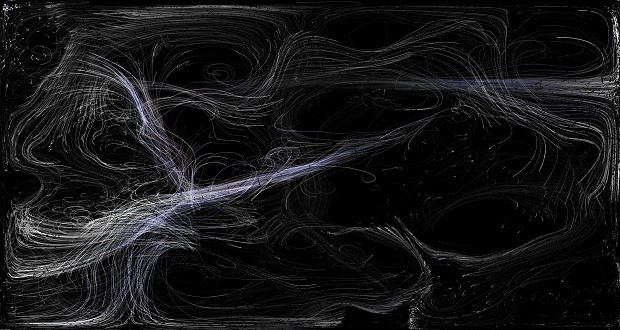

Early Story
The Big Bang happened 13.8 billion years ago, and the speed of light is constant, as far as we know it. Even though the universe might be infinite, the observable universe is finite. So perhaps, our universe may be just one minuscule region, in a larger multiverse.

The multiverse. One of the most baffling questions in astrophysics is “are we a part of infinite universes?” So let’s take a look at this amazing theory of the multiverse, and do we live in one?
Before we go any deeper, let’s talk about some important concepts that lead us to understand the insight behind the multiverse.
Uniqueness
Uniqueness is one of those ideas that is unquestionable. There are very low chances of something being identical to it. Just like your fingerprints. But in a very recent picture of the cosmos, which says nothing is unique, the very notion of uniqueness is being challenged. It says that there might be duplicates of everything. Not only of objects but of me, you, everyone, and everything else. And if it’s right, why haven’t we seen them? And where are they?
There was a time when the idea of a multiverse seemed impossible. But in recent years, scientists have discovered some compelling evidence of other universes. Some are born all the time. They might look identical to ours, having the same star and even the same planets. They might also have our duplicates, very identical to us. Except for the slightest details. In another universe, it might be possible that we would be dying or being born. We could be getting married. Or perhaps, we could even be the prime minister of India. Of course, not us per se, but our identical selves.
But how it is possible? Doesn’t this idea seem absurd?
Let us take a look at why this idea is compelling, not only to us but also to the scientists.
The Root
We all know about the Big Bang theory. It tells us about the massive explosion that led to the formation of our universe. But the Big Bang misses one thing, it doesn’t tell us anything about the bang.
What caused the bang? And how it banged?
Our universe has been expanding since the Big Bang. This means that everything is moving away from each other because the space between them is expanding. In 1979, Alan Guth was studying the particles in the early universe. He observed that in the early universe, under violent and harsh environments, gravity can be repulsive. The repulsive gravity would drive apart everything around and repel it, causing a massive expansion. This force was so powerful that it could take a molecule, and blow it up to the size of a Galaxy, in less than a billionth of a blink of an eye. This idea gave birth to the theory of inflation.

Then, the theory of multiverse gained unexpected support from two major areas of modern science, and these may be the key to understanding the many important phenomenons, in our universe and beyond.
Dark energy
In the twentieth century, astronomers believed that the universe might be shrinking, or might be slowing down. The analogy is like when you throw a ball up in the air, it comes back to you after some time. Astronomers believed that the universe was expanding and thought it would slow down. Because of the gravitational pull of the stars and galaxies. But when detailed observations were made, especially by Edwin Hubble, astronomers observed that the universe was not slowing down. Instead, it was accelerating outwards. Everything was moving away from each other at an increasing speed. Scientists believed there had to be an invisible force behind this. Astronomers called it dark energy. Dark Energy is one of the most important discoveries in astrophysics. However, there was another aspect of this strange force. Its strength. Scientists believed that at the quantum level, the amount of energy that would be generated is gigantic. When astronomers measured the amount of dark energy present in our universe it was in \(10^{-120}\).
Imagine a number so small, it has 119 zeros after the decimal points. That seems like an infinitely small number.
Astronomers found out that if this tiny amount of dark energy would have been just slightly larger or lower; life as we know it wouldn’t exist.
How can this amount of dark energy be so perfect for our universe?
The multiverse gives us the answer. The amount of dark energy differs in every universe. In some,

it might be so less that the matter would collapse in on itself, and hence nothing could exist. In others, dark energy is so large that matter could never get a chance to form and nothing wouldn’t even exist. And this was a baffling realization for scientists.
Types of Multiverse
According to cosmologist Max Tegmark, there are four different levels of multiverses. From thoughts that are generally accepted by prominent scientists, to even some outlandish speculations. The four levels of Tegmark’s classification are arranged such that subsequent levels can be understood to encompass and expand upon previous levels.
Max Tegmark and Brian Greene have devised classification schemes for the various theoretical types of multiverses and universes that they might comprise.
We’ll simply go over the first two of these levels in this article.
Level-I Multiverse: The least contentious
This is based on the fundamental notion that space is infinite, reaching out in all directions indefinitely toward the horizon. The assumption is that, since our universe is so vast and gigantic, it must inevitably replicate itself at some point, in another space or time. Life may start in a galaxy far, far away from where we are. And that life will develop into beings who will live in a world similar to Earth. If this is true, it would properly explain the presence of doppelgangers, or beings who are slightly different from each other.
Dr. Tegmark concluded that if such a perfect pair of doppelgangers existed, they would be somewhere at a distance of 10^118 meters away from one another. It’s three times larger than our current observable universe.
Level-II Multiverse: An endless collection of various space-time dimensionalities
The basic idea here is that, as the vacuum of space continues to expand, it permits various configurations of each physical constant to vary by a minuscule amount, in another set of universes. Perhaps just a tiny change in those constants would allow one specific universe to have a different set of governing physical laws.
We might wonder naively: “What’s the worst that might happen if we modify the fundamental constants of our universe?”


Scientists use the power of supercomputers, to churn through intertwined equations. Potentially looking at the other sets of universes, and unraveling the deep mysteries of what these alternate universes would look like. Here’s a bigger picture of how that methodology works.
We have the universe’s parameters as a starting point. These include things like the value of the cosmological constant, the gravitational constant, the mass of quarks, etc. Now, we add these rather peculiar numbers in each row, down to the last digit, and as a result, we have... the universe as we know it! The gravitational pull, quark mass, or even dark energy would be just right to allow our universe to exist.
However, if we put a vastly different value in each of those rows, the simulation indicates that the only thing that would emerge is... nothingness. Then we make another addition to our table, this time with something that is a little closer to our physical constants. So we copy these numbers but adjust them somewhat, not by much. After a while, in the third possible universe, the same nothingness will arise in that possible reality.
If we simply copy and paste the same numbers from our universe and tweak one of the data points by a few percentage points, we will also get nothing! You and I wouldn’t exist. If we repeat this data entry for some time, we’ll discover an immense pool of darkness and nothingness in the process.
But there was another piece of this puzzle missing which lead us to unfold another concept.
How can we be so sure about this diversification of universes, so that every value of dark energy including the value of our universe, can be found somewhere else?
String Theory
String theory proposes that at subatomic levels, small particles (here we will call quarks) are made up of small vibrating loops of energy, or strings. They can create different particles based on how they vibrate. This theory is believed to lay the foundation for the one fundamental equation for our universe. String theory also proposes extra dimensions of space.

Thought Experiment
Let’s now suppose we look at a wire, hanging in the distance from us. If we observe it, it looks like a line; one-dimensional.
But what about the ants that are on the wire?
It would see an extra dimension. And if we could shrink down billions of times than the ants, we’ll find extra dimensions curled up into loops, everywhere in space. The shape of those dimensions determines how the strings will vibrate. And this vibration of space defines the different properties of the particles.
When scientists tried to figure out these different shapes, they were blown away by the million possibilities of shapes, each as unique as the other one and this was heartbreaking for them. What good is a theory that has billions of solutions, finding anything would almost be impossible. But some string theories thought to look at the problem differently, a way that would lead to a multiverse.
Fits for Cosmology
This diversification of possible shapes says that string theory fits perfectly for cosmology and multiverse. All these different shapes might correspond to a different unique universe. At the end of the day, cosmologists can see three different theories pointing to a single theory the theory of the multiverse. Different lines of research were focusing on one idea, and the theory of multiverse seemed convincing. All the various alternative universes out there might have a different amount of dark energy naturally and the unique shapes of these extra dimensions.
In the future, we might see other advances in this research. But as of now, we can’t observe beyond the observable universe as the space between these galaxies and the space itself is expanding.